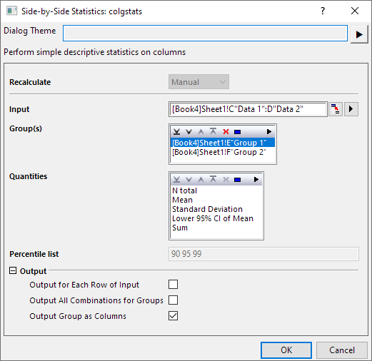
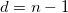
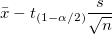
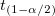
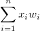
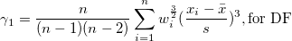
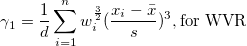
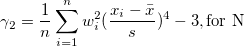
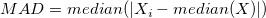

. Die Gruppierungsspalten sind auf kategorisch gesetzt, falls die meisten Spaltenwerte Text sind. Sie können die Ausgabespalten ganz einfach neu ordnen.
. Die Gruppierungsspalten sind auf kategorisch gesetzt, falls die meisten Spaltenwerte Text sind. Sie können die Ausgabespalten ganz einfach neu ordnen.
Legen Sie den Eingabedatenbereich fest..
Mehrere Gruppierungsspalten enthalten Gruppierungsinformationen, die in das Feld Gruppe eingefügt werden können. Verschiedene Gruppierungswerte weisen darauf hin, dass die Daten in den entsprechenden Zellen aus verschiedenen Gruppen sind. Sie können Gruppierungsspalten über Schaltflächen hinzufügen, entfernen und ordnen: Nach oben verschieben  , Nach unten verschieben
, Nach unten verschieben  , Entfernen
, Entfernen  , Alle auswählen
, Alle auswählen  , Auswählen
, Auswählen  auf der Symbolleiste . Die Gruppierungsspalten sind auf kategorisch gesetzt, falls die meisten Spaltenwerte Text sind. Sie können die Ausgabespalten ganz einfach neu ordnen.
auf der Symbolleiste . Die Gruppierungsspalten sind auf kategorisch gesetzt, falls die meisten Spaltenwerte Text sind. Sie können die Ausgabespalten ganz einfach neu ordnen.
Angenommen,  ist die
ist die  -te Stichprobe und
-te Stichprobe und  die -te Gewichtung.
die -te Gewichtung.
| N gesamt |
Gesamtanzahl der Datenpunkte, bezeichnet mit n |
|---|---|
| N fehlend |
Anzahl der fehlenden Werte |
| Mittelwert |
Der (durchschnittliche) Mittelwert
|
| Standardabweichung |
wobei  Hinweis: In OriginPro hat |
| SE des Mittelwerts |
Standardfehler des Mittelwerts
|
| Unteres 95% KI des Mittelwerts |
Untere Grenze des 95%-Konfidenzintervalls des Mittelwerts  wobei  der") kritische Wert der Studenten-t-Statistik mit n-1 Freiheitsgraden ist. kritische Wert der Studenten-t-Statistik mit n-1 Freiheitsgraden ist.
|
| Oberes 95% KI des Mittelwerts |
Obere Grenze des 95%-Konfidenzintervalls des Mittelwerts
wobei der |
| Varianz |
|
| Summe |  . Wenn es keine Variable Gewichtung gibt, wird die Formel reduziert auf . . |
| Schiefe |
Die Schiefe misst den Grad der Asymmetrie einer Verteilung. Sie wird definiert als 
 Hinweis: Wenn die WDF- oder WS-Methode ausgewählt ist, wird die Schiefe als fehlender Wert angegeben. |
| Kurtosis |
Die Kurtosis zeigt den Grad der Peaks einer Verteilung an.

Hinweis: Wenn die WDF- oder WS-Methode ausgewählt ist, wird die Kurtosis als fehlender Wert angegeben. |
| Unkorrigierte Summe der Quadrate |
|
| Korrigierte Summe der Quadrate |
|
| Variationskoeffizient |
|
| Mittelwert Absolutabweichung |
|
| SD mal 2 |
Standardabweichung mal 2
|
| SD mal 3 |
Standardabweichung mal 3
|
| Geometrischer Mittelwert |
Hinweis: Gewichtungen werden für den geometrischen Mittelwert ignoriert. |
| Geometrische StAbw |
Die geometrische Standardabweichung Hinweis: Gewichtungen werden für die geometrische Standardabweichung ignoriert. |
| Modus |
Der Modus ist das Element, das am häufigsten im Datenbereich auftaucht. Wenn mehrere Modi gefunden werden, wird das kleinste gewählt. |
| Summe der Gewichtungen |
|
| Harmonisches Mittel |
Harmonisches Mittel
mit Gewichtung: wenn |
| Minimum |
|
| Index des Minimums |
Die Indexnummer des Minimums im ursprünglichen (Eingabe-)Datensatz |
| 1. Quartil (Q1) |
Erstes (25%) Quantil, Q1 Informationen zu Berechnungsmethoden finden Sie unter Interpolation von Quantilen. |
| Median |
Median oder zweites (50%) Quantil, Q2 Informationen zu Berechnungsmethoden finden Sie unter Interpolation von Quantilen. |
| 3. Quartil (Q3) |
Drittes (75%) Quantil, Q3 Informationen zu Berechnungsmethoden finden Sie unter Interpolation von Quantilen. |
| Maximum |
|
| Index des Maximums |
Die Indexnummer des Maximums im ursprünglichen (Eingabe-)Datensatz |
| Interquartilbereich (Q3-Q1) |
|
| Spannweite (Maximum-Minimum) |
Maximum - Minimum |
| Benutzerdefinierte Perzentil(e) |
Benutzerdefinierte Perzentile können berechnet werden. |
| Perzentilliste |
Diese Option ist nur verfügbar, wenn Benutzerdefinierte Perzentil(e) aktiviert ist. Perzentile werden für alle aufgeführten Werte berechnet. |
| Mittlere absolute Abweichung (MAD) |
Für einen univariaten Datensatz X1, X2, ..., Xn, wird MAD als Median der absoluten Abweichungen vom Median der Daten definiert:
 das heißt, angefangen bei den Residuen (Abweichungen) vom Median der Daten, ist die mittlere absolute Abweichung MAD der Median ihrer absoluten Werte. |
| Robuster Variationskoeffizient |
|
| Ausgabe für jeder Zeile der Eingabe | Die entsprechenden Statistiken rechts von jeder Datenzeile werden ausgegeben. |
|---|---|
| Ausgabe aller Kombinationen der Gruppen |
Das Statistikergebnis von jeder kombinierten Gruppe wird auf der rechten Seite der Quelldaten ausgegeben.
Hinweis:
|
| Gruppen als Spalten ausgeben | Die Gruppeninformationen zu den Spalten werden ausgegeben. |
 . Wenn es keine Variable Gewichtung gibt, wird die Formel reduziert auf
. Wenn es keine Variable Gewichtung gibt, wird die Formel reduziert auf  .
.^2/d}")
 vier Optionen mehr, die im Zweig
vier Optionen mehr, die im Zweig 
}\frac s{\sqrt{n}}")

^3,\mbox{for N}")
}{(n-1)(n-2)(n-3)}\sum_{i=1}^n w_i^2(\frac{x_i-\bar{x}}s)^4-\frac{3(n-1)^2}{(n-2)(n-3)},\mbox{for DF}")
^4 -3,\mbox{for WVR}")

^2")


 ^{\frac 1n}")
}") , wobei std für die ungewichtete Standardabweichung der Stichprobe steht.
, wobei std für die ungewichtete Standardabweichung der Stichprobe steht.
^{-1}}n\right)^{-1}")
^{-1}")
 oder Gewichtung negativ ist, wird Fehlende weitergegeben; wenn
oder Gewichtung negativ ist, wird Fehlende weitergegeben; wenn }\,")
}\,")

)/Median\,")